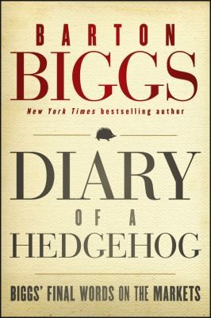

巴顿·比格斯（Barton Biggs）2012年7月14日去世，享年七十九岁；同年11月6日，Wiley出版《Diary of a Hedgehog: Biggs' Final Words on the Markets》，初版240页、ISBN 978-1-118-29999-9。中信出版社2013年推出蒋宗强译本《对冲基金风云录3：王者私语》，馆藏记录为256页、ISBN 978-7-5086-3898-0。书稿由比格斯2010年年中至2012年的投资日志编成，因此既是遗作，也是危机后两年市场情绪的同期记录。比格斯在摩根士丹利工作三十年，建立研究部门和投资管理业务，曾任首席全球策略师；《机构投资者》称他十次入选全美研究团队，1996至2003年在该机构调查中居全球策略师首位。2003年，他与同事创办Traxis Partners；去世时，自己直接管理的Traxis Global Equity Macro Fund约十二亿美元，而旗舰基金由多位经理共同负责，这两个数字不应混用。
日记从2010年年中写起。比格斯当时担心美国像1937年那样过早收紧财政，却仍在传统组合中保留约15%至20%现金，在对冲基金账户维持约40%至50%净多头；他偏好亚洲新兴市场和大型科技股，也不断检查自己是否只是把宏观信念强加给价格。章节标题保留了这种摇摆："This Is No Time to Get Wobbly, George!"催促自己别动摇，"Nobody Can See His Own Backswing"承认人很难看见自己的动作缺陷。后续日志跨过日本地震、欧元区债务危机、美国财政争论和中国增长预期，目录里既有"Start Buying the Dips"，也有"Begin Thinking about Buying"和"A Tough Call"。2011年条目还讨论大卫·斯文森与耶鲁基金、私募股权、ETF以及"新面貌的中国"，材料在宏观、机构配置和个人工作习惯之间来回切换。这不是一条始终如一的胜利曲线，而是观点、仓位和风险承受力不断相互校准。
比格斯把注意力管理视为投资工具。"Miss at Least One Meeting a Day"要求自己故意缺席至少一场会议，腾出独立思考时间；"Turn off Your Bloomberg and Tune Out the Babel"则提醒读者，盯住每一个报价会放大短期波动，却未必增加判断所需的信息。他还观察到，2008年之后机构客户对对冲基金的要求发生变化：许多人不再追求高额绝对回报，而想要一种低波动的"债券替代品"，这会迫使经理降低净敞口，也会让收费、流动性和客户预期产生新的矛盾。Traxis旗舰基金2011年亏损约5.35%，2012年上半年大致持平；这些结果使书中的自我怀疑有真实背景，而非故作谦逊。书名中的"刺猬"承接比格斯2006年的《Hedgehogging》，借以赛亚·伯林"狐狸知道很多事，刺猬知道一件大事"的比喻，形容被净值和绝对回报紧紧约束的基金经理。
日记体也决定了它的局限：观点写在事件进行中，数字和政策判断受当时信息约束，某些预测后来正确，另一些没有兑现；出版社副标题"最后的市场箴言"不能把这些文字变成经过审计的交易记录。更有用的读法是把日期、判断、仓位和后续结果分开标注，观察比格斯何时因价格变化调整敞口，何时因基本假设改变而认错，何时只是承受市场波动。还可以把同一主题跨日期串联，例如他对中国、科技股和财政紧缩的判断，检验理由是否随价格改变而偷偷更换。宏观投资最难的并不是提出"看多中国"或"担忧美国财政"这样的观点，而是把信念转成有限仓位，并在证据改变前保留继续行动的能力。《王者私语》保存的正是这个中间层：不是整理完毕的方法论，也不是英雄式传记，而是一名老练经理在实时噪音中仍会犹豫、修正和犯错的工作底稿。